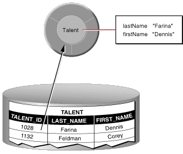
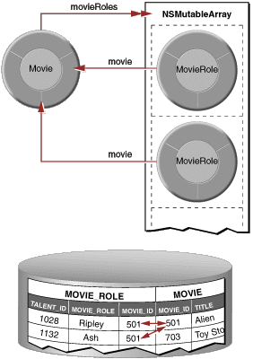

| PATH |

Enterprise objects make use of a separate file, known as a model, to specify a mapping between tables in the database and your enterprise-object classes. This is formally called an entity-relationship (E-R) model. You use EOModeler to create and maintain these models. With EOModeler you can
A model represents a level of abstraction above the database. The database-to-objects mapping embodied in a model sets up a correspondence between database tables and the model's entities; frequently, table rows map to instances of the appropriate data entity, as shown in Figure 3-2.
Figure 3-2 Mapping between an enterprise object class and a single table
In actual practice, the mapping is more flexible than this. For example:
firstName and lastName attributes
to a PERSON table but
its streetAddress, city, state and zipCode attributes
to an ADDRESS table.price
* discount or salary
* 12. In addition to mapping tables to entities and columns to attributes, WebObjects maps primary and foreign key columns to relationships between objects. WebObjects defines two types of relationships—to-ones and to-manys—which are both illustrated in Figure 3-3. The relationship a MovieRole has to its Movie is a to-one relationship, while the relationship a Movie has to its MovieRoles is a to-many.
Figure 3-3 Mapping relationships
